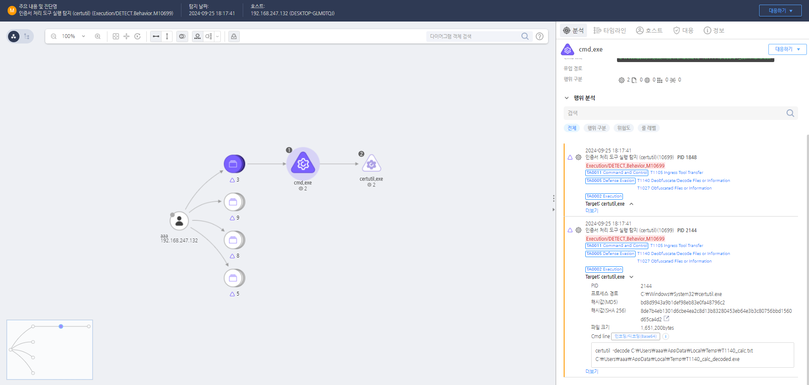

MITRE ATT&CK 액션을 기준으로 대응 방안을 작성
certutil 도구를 이용해 Base64로 인코딩된 파일을 -decode 옵션으로 디코딩하는 행위를 탐지한다.
 https://172.18.10.125:8903/#/analysis/alert/66f3d441002dc795000000f2
파일 및 시스템 분석 파일 생성 및 변경 모니터링: 시스템에서 의심스러운 파일이 생성되거나 기존 파일이 변경된 이력을 모니터링합니다. 특히, 최근에 생성된 파일이 Base64로 인코딩된 내용을 디코딩하여 만들어진 파일인지 확인합니다. 디코딩된 파일 분석: 공격자가 Base64로 인코딩된 데이터를 디코딩하여 생성한 파일의 유형과 내용을 분석합니다. 파일이 실행 가능한 바이너리 파일인지, 스크립트 파일인지 또는 다른 유형의 파일인지 확인하고, 악성 코드가 포함되어 있는지 조사합니다. 로그 및 히스토리 확인: 시스템 및 애플리케이션 로그를 분석하여 Base64 디코딩이 이루어진 시점과, 해당 명령이 실행된 사용자 및 프로세스를 확인합니다. 명령어 히스토리 또는 로그를 통해 공격자가 사용한 도구와 명령어를 파악합니다.
디코딩 활동의 출처 추적 디코딩 명령어 조사: base64 명령어, certutil, PowerShell의 Base64 디코딩 함수 등, 공격자가 사용한 디코딩 명령어를 추적하여 어떤 프로세스가 실행했는지 확인합니다. 사용자 및 프로세스 조사: 디코딩 작업이 실행된 사용자의 권한 및 계정 활동을 조사하여, 내부 사용자 계정이 악용되었는지 확인합니다. 또한, 디코딩을 수행한 프로세스의 부모 프로세스와 관련된 활동을 추적합니다. 네트워크 활동 분석: 디코딩된 파일이 외부 서버로부터 다운로드되었거나 외부로 전송되었는지 네트워크 트래픽 로그를 분석합니다. 공격자가 C&C 서버와 통신하여 Base64로 인코딩된 데이터를 수신했거나 전송했는지 여부를 확인합니다.
격리 및 제거 조치 의심스러운 파일 격리: 디코딩된 결과로 생성된 파일을 격리하여 분석하고, 악성 코드로 확인된 경우 해당 파일을 삭제합니다. 파일이 격리된 후, 시스템의 백업 및 무결성 검사를 통해 동일한 파일이 다른 위치에 존재하지 않는지 확인합니다. 프로세스 종료 및 시스템 격리: 악성 활동을 수행한 프로세스를 종료하고, 필요 시 해당 시스템을 네트워크에서 격리하여 추가적인 피해를 방지합니다. 시스템 복구: 감염된 시스템을 초기화하고, 중요한 데이터만 복구하여 공격자가 설치한 악성 프로그램이나 백도어가 없는 상태로 복원합니다. 복원 후, 시스템이 최신 보안 패치 상태를 유지하도록 합니다.
사고 보고 및 법적 대응 내부 보고 및 공유: 내부 보안 팀 및 관련 부서에 해당 공격 활동을 보고하고, 공격의 범위 및 피해를 파악하여 추가적인 대응 조치를 마련합니다. 법적 대응: 필요 시 법 집행 기관에 해당 공격 활동을 보고하고, 수사에 필요한 증거 자료를 수집 및 제공하여 법적 대응을 지원합니다. 직원 교육 및 인식 강화: 공격자가 사용한 수법에 대해 직원들에게 교육하고, Base64 인코딩된 악성 코드의 위험성을 인식하도록 하여 유사한 공격이 재발하지 않도록 예방합니다.
파일 인코딩/디코딩 활동 제한
디코딩된 데이터 및 파일 탐지 강화
악성 스크립트 및 인코딩된 데이터 탐지
사용자 교육 및 인식 강화
디코딩 및 인코딩 활동 로깅 및 분석
Action 실행시 함께 영향을 받는 다른 Techniqes
| ATT&CK |
|---|
| T1140 |
| T1027.003 |
| D3FEND |
|---|
| D3-FIM File Integrity Monitoring |
| D3-ISL Executable Allowlisting |
| D3-ELM File Integrity Monitoring |
| D3-ELM File Access Pattern Analysis |
| D3-ELM System File Analysis |